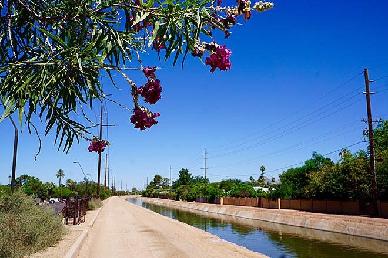

Old Town Scottsdale Real Estate: Homes and Lifestyle
Welcome to Old Town Scottsdale
Historic Western charm meets walkable urban luxuryWhat to Love
- Walkable galleries, restaurants, and nightlife
- Cactus League spring training at Scottsdale Stadium
- Scottsdale Fashion Square and the Waterfront nearby
- Condo and infill living with strong rental flexibility
What is Old Town Scottsdale known for?
Old Town Scottsdale is Scottsdale's entertainment and cultural center, and it is the most urban part of the city. The neighborhood mixes historic Western-era storefronts with luxury condominiums, art galleries, nightlife, and a walkable restaurant scene, and it draws vacation-home buyers and Cactus League spring training visitors every year.
Unlike the master-planned communities found farther north, Old Town developed organically around its original townsite, which is why the area feels distinctly different block to block — historic adobe buildings sit near new luxury infill and mid-rise condo towers.
What types of homes are available in Old Town Scottsdale?
Housing in Old Town Scottsdale is dominated by condominiums and townhomes, along with mid-century ranch homes and new luxury infill construction. Ground-level single-family lots are limited compared with other Scottsdale neighborhoods, since much of the newer inventory is built vertically.
Many condo and patio-home buildings offer lock-and-leave living, which supports use as a second home, a seasonal residence, or an income property where short-term rentals are permitted by the building and the City of Scottsdale.
What landmarks and subdivisions define Old Town Scottsdale?
Old Town Scottsdale is anchored by Scottsdale Fashion Square, the Scottsdale Waterfront, the Scottsdale Civic Center, and Scottsdale Stadium, home to Cactus League spring training baseball. These landmarks put dining, shopping, art galleries, and entertainment within walking distance of most residences in the district.
The Arts District along Main Street and Marshall Way is known for its galleries and the weekly Scottsdale ArtWalk, and it remains one of the most walkable pockets of the neighborhood.
What restaurants and hotels give Old Town Scottsdale its vibe?
Old Town's dining scene is one of the most decorated in the Valley: FnB is a James Beard Award-winning farm-to-table kitchen, Café Monarch is regularly ranked among the top fine-dining rooms in the country, and Citizen Public House and Virtù Honest Craft round out a walkable strip of nationally recognized restaurants.
For visitors and second-home buyers, Hotel Valley Ho — a restored 1956 mid-century boutique hotel — and Senna House anchor the neighborhood's hospitality scene, both within walking distance of Fifth Avenue and Main Street.
What should buyers know before purchasing in Old Town Scottsdale?
Buyers should confirm each building's short-term rental policy before purchasing, since rules vary by HOA and can affect both resale value and rental income potential.
Because nightlife and event traffic are concentrated in the district, buyers who want a quieter setting may prefer condo buildings set back from Scottsdale Road and Camelback Road, while buyers who want to walk to restaurants and galleries should prioritize proximity to Fifth Avenue and Main Street.


Common Questions
Can I use an Old Town Scottsdale condo as a short-term rental?
Short-term rental rules vary by building, HOA, and current City of Scottsdale ordinance, and some communities restrict or prohibit them entirely. Buyers planning to rent short-term should confirm the specific building's rules before purchasing.
Is Old Town Scottsdale walkable?
Yes. Most of Old Town Scottsdale is walkable to restaurants, art galleries, and the Scottsdale Waterfront, and Scottsdale Fashion Square is within a short walk or bike ride of many buildings in the district.
What is Scottsdale Stadium used for?
Scottsdale Stadium hosts Cactus League spring training baseball each year and is a seasonal draw for visitors and buyers interested in vacation homes in Old Town Scottsdale.
Are there single-family homes in Old Town Scottsdale?
Yes, though inventory is limited relative to condos and townhomes, since much of the newer development in the district is built vertically.
What are the best-known restaurants in Old Town Scottsdale?
FnB, Café Monarch, Citizen Public House, and Virtù Honest Craft are among Old Town's most nationally recognized restaurants, several within walking distance of one another.
What hotels are in Old Town Scottsdale?
Hotel Valley Ho, a restored 1956 mid-century boutique hotel, and Senna House are two of the neighborhood's best-known hotels, both walkable to Fifth Avenue and Main Street.


Considering a Move to Old Town Scottsdale?
Call 480-734-0870 or email laura@laurajorden.com for current listings and market data.
Contact Laura